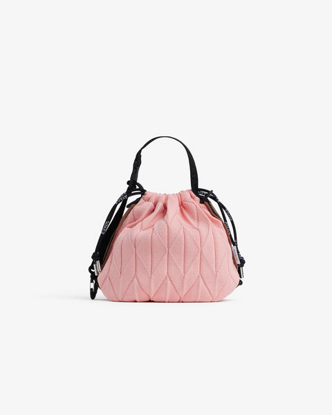

01 · PDP Revamp
Rebuilding a product page around purchase confidence
A product page that search traffic reached and bounced off, rebuilt around what earns its space.
- +33%mobile search CTR
- +51%scroll depth
- +23%conversion rate
Pre/post comparison across two five-week windows. Not a controlled experiment — see Outcome.
Redesigned product page on mobile, top of the page/images/01-pdp/hero-mobile.jpg
The same page on desktop/images/01-pdp/hero-desktop.jpg
2 · The problem
Search was working. The page wasn’t.
Over four months, Atacz product pages pulled 80,266 impressions from Google Search and converted 5,170 clicks. The top three product pages sat between 1.0% and 1.7% click-through — around half the 2–3% ecommerce benchmark.
| Product | Impressions | Clicks | CTR |
|---|---|---|---|
| Miffy Statement Tote | 22,889 | 351 | 1.53% |
| Miffy Twist | 5,000 | 84 | 1.68% |
| Twist Bag | 5,827 | 60 | 1.03% |
The traffic was there. People were finding us and choosing not to come in.
74.3% of those clicks were mobile. The page had been built desktop-first.
3 · What I found
The listing didn’t match the page. Meta descriptions ran up to 1,387 characters where search engines crawl about 160, so the snippet Google displayed was a truncated fragment of boilerplate. Page titles followed no shared convention.
The brand’s two differentiators were invisible. Atacz is built on upcycling — two PET bottles per bag — and on mix-and-match: bags, straps and accessories designed to be combined. On the PDP, the upcycling story sat inside a collapsed tab below the fold, and there was no pairing prompt at all. Yet the Bind Strap, a pure accessory, had sold 99 units unprompted, making it a top-five seller by volume. Demand for pairing existed. The page never mentioned it.
The right content was in the wrong place. Clarity heatmaps showed engagement concentrated on the hero image and CTA, then collapsing. Everything of value sat below that point — while the space above it was occupied by elements that weren’t earning it:
| Element | Evidence |
|---|---|
| Shop Pay Installments | 1% of payments (0.87% annual) |
| Afterpay | BNPL combined under 2% |
| Review section | 3 clicks from 162 search impressions |
A note on research. I didn’t run formal usability sessions on this project. What I had was behavioural data at scale — Clarity heatmaps and session replays, Search Console, Shopify Analytics — plus informal walkthroughs with colleagues. That was enough to locate where people stopped, but not why. Formal testing is what I’d add before the next iteration.
/images/01-pdp/01.jpg4 · Decisions
Removing the review section, then putting it back differently
Context. Reviews are a default trust signal, so removing them looks reckless. Atacz was a young brand and reviews had pooled onto a handful of products. Most PDPs had none.
The real problem was inconsistency, not performance. The same template rendered completely differently depending on the product — some pages showed a healthy review block, most showed an empty shell. A customer moving between two bags saw two different pages. And an empty review section doesn’t read as “new product.” It reads as “nobody bought this.” The engagement data supported removal, but consistency is why I removed it.
The pushback. Marketing’s position was direct: reviews build trust, and we’d removed trust.
They were right about the goal. The disagreement was about what an empty block communicates. Removing proof and displaying the absence of proof aren’t the same thing.
What I shipped instead of restoring it. A conditional section — products with reviews render it, products without don’t render the block at all. Marketing’s goal met, catalog consistency preserved. Review collection continued through email marketing the whole time.
In hindsight, that’s what should have shipped first. Removing it outright was the faster call and it stopped the inconsistency immediately, but it also discarded working signal on the products that had it.
/images/01-pdp/02.jpgCutting the page down, and adding one thing back
The same release removed more than it added. That was deliberate — the question wasn’t “what should we add” but “what has earned this space.”
Cutting. Clarity showed engagement collapsing after the hero and CTA. The instinct is to move the good content up. I cut the page to roughly a quarter of its length instead — the product description had grown into the longest block on the page, and almost nobody was reaching it.
Adding. “Pairs Well With” went directly beneath the Add to Cart button, and was extended from a handful of products to every PDP. The moment right after a customer commits to a bag is the moment they’re most open to “what goes with it.” Each pairing card carries its own add-to-cart, so a set can be assembled without leaving the page.
The description became a collapsed accordion to make room. That risks hiding content from crawlers, so I kept it server-rendered in the DOM rather than injecting it on expand, and verified with Google Search Console’s URL Inspection tool that it was still being crawled before shipping.
Reading the scroll number honestly. Scroll depth is a percentage of page length, so a shorter page inflates it mechanically. The honest read is the pair: the page got about 4× shorter and measured scroll depth rose 51%. People were reaching proportionally further through a page that was already far shorter.
Trade-off. Placing a cross-sell module directly under the primary CTA competes with it. I accepted that because the module points deeper into the catalog rather than away from it, and watched quick-back-click rate as the tripwire — it fell from 4.79% to 4.44%.
/images/01-pdp/03.jpg/images/01-pdp/04.jpgPutting the brand on the product photo
Context. Most of our traffic comes from paid social, and it lands on a PDP or a PLP — almost never the homepage. For those visitors the product page is the brand introduction, and ours introduced nothing. The upcycling story was a line of text inside a collapsed tab.
What I chose. A PET bottle count badge — “this bag = N recycled bottles” — overlaid on the top-left of the product media. Guaranteed exposure on the first screen, independent of scroll.
Trade-off. Overlaying anything on product imagery is normally off-limits in fashion; it’s the most expensive real estate on the page. It worked here because of what we sell: bags photographed centre-frame leave the top corners consistently empty across our catalog. This is a decision that depends on our specific photography, not a pattern I’d port elsewhere without checking.
Hover or tap the badge. It expands in place and never navigates.

The badge in Liquid
{%- assign bottles = product.metafields.custom.pet_bottle_count.value -%}
{%- if bottles > 0 -%}
<pet-bottles-badge class="pet-bottles-badge pet-bottles-badge--top-left"
style="--pet-badge-bg: {{ s.pet_badge_bg | color_modify: 'alpha', 0.5 }};
--pet-badge-bg-hover: {{ s.pet_badge_bg_hover }};">
<span class="pet-bottles-badge__default">
{{ s.pet_badge_icon | image_url: width: 96 | image_tag }}
<span>× {{ bottles }}</span>
</span>
<span class="pet-bottles-badge__hover">
{{ bottles }} {{ s.pet_badge_hover_text }}
</span>
</pet-bottles-badge>
{%- endif -%}Making badges that can’t become lies
Two badges replaced the payment badges we removed. Both are designed so they stop being shown the moment they stop being true.
Low stock at 2 units. Most stores set this threshold generously, because urgency sells. We couldn’t: our stock genuinely runs thin, so calling a healthy quantity “low” would have been technically true and practically dishonest. Two units is where it’s simply a fact. The threshold is configurable 1–10 in the section schema, so merchandising can tune it per collection without touching code.
New expires by itself. The badge applies the moment a product is created and removes itself after three months, automated through Shopify Flow rather than left to someone’s memory. A “New” badge that outlives its truth is worse than no badge.
The product information column as it ships. Drag the stock down and the badge appears at 2 — the point where “low” is simply a fact. Turn the other two rules on and watch which one the page is willing to show.
Twist Bag
$163.00 Sold out
Color — Peach Jelly
The other two rules
The badge in Liquid
{%- liquid
assign limit = block.settings.low_stock_threshold | default: 2
assign left = variant.inventory_quantity
# 자리는 하나. 먼저 맞는 규칙이 이긴다 / one slot, first rule wins
if left > 0 and left <= limit
assign badge = 'Low Stock'
elsif product.metafields.custom.is_new
assign badge = 'New'
elsif product.metafields.custom.best_seller_rank > 0
assign badge = 'Popular'
endif
-%}5 · What shipped
New mobile hierarchy
Product image + PET badge → Low Stock / New badge → Title → Price → Variants → Add to Cart → Pairs Well With → Description (collapsed) → You May Also Like → FAQ
Alongside the layout: standardized title conventions ([Product Name] | Atacz), meta descriptions rewritten inside the crawl limit, and JSON-LD product schema.
Infrastructure. The store ran one theme template per product — a workaround for having no metafields, which meant every content change needed a developer. Extending “Pairs Well With” to every PDP would have meant hand-editing every template forever. I migrated to a single template driven by Shopify metafields, so pairings, bottle counts and badge states became data the merchandising team edits in Shopify admin. The redesign only holds up if someone other than a developer can keep it current.
/images/01-pdp/05.jpgThere was no design system when I joined. I set up basic type and colour foundations to work from, but didn’t build a component library — I was building the front-end as well, so components got defined directly in Shopify sections as we went, and Figma served as a working reference rather than a handoff artifact. On a product team with engineers I’d expect Figma to carry much more weight, and I’d want it to.
6 · Outcome
How I measured. Two five-week windows — Feb 25 to Mar 31 (before) and Apr 1 to May 5, 2026 (after). Sources: Google Search Console, Microsoft Clarity, Shopify Analytics. Pre/post comparison, not a controlled experiment.
Search
| Device | Before | After | Change |
|---|---|---|---|
| Mobile (74% of traffic) | 7.47% | 9.97% | +33% |
| Desktop | 5.43% | 7.30% | +34% |
| Tablet | 5.33% | 7.54% | +41% |
| Product snippets | 2.59% | 3.27% | +26% |
Average mobile position moved from 5.34 to 4.51.
Engagement
| Metric | Before | After | Change |
|---|---|---|---|
| Scroll depth, all PDPs | 24.2% | 36.5% | +51% |
| Scroll depth, Twist Bag | 21.7% | 35.3% | +63% |
| Dead click rate | 1.5% | 0.7% | −53% |
| Quick back-click rate | 4.79% | 4.44% | −7% |
| “Pairs Well With” clicks | — | 494 sessions | new |
Scroll depth tests the core hypothesis most directly: the content was already good, it was just past the point where people stopped. Dead clicks halving says the decluttering worked — fewer elements that looked interactive but weren’t.
Conversion
Overall conversion rose from 0.284% to 0.349%, +23%. The interesting part is where it came from.
Add-to-cart barely moved. What changed was completion — the share of cart sessions finishing checkout went from 20.8% to 25.3%. The revamp didn’t make more people add to cart. It made the people who added more likely to finish.
What I can’t claim
Add-to-cart is not a clean result. The same metric points three ways depending on the window: +26% on a tight post-launch window, +7% on the official windows, −44% over eight weeks. All three are correctly calculated. The spread comes from product launch cycles, not page design — during a product drop, add-to-cart hit 10.6% against a 2–3% baseline, then fell straight back. The before period carried that momentum; the after period had no new drops. So I don’t attribute add-to-cart movement to the redesign in either direction.
AOV fell 9% while orders rose 9%. The likely cause is product mix shifting toward lower-priced accessories surfaced by “Pairs Well With” — bundle variety rose and the single dominant pairing dropped from 26% to 18% of all bundles, which is what a working cross-sell module should produce. I couldn’t confirm it at the line-item level, so it stays a hypothesis.
And the general caveat. Session volume differed between windows (66,512 vs 58,389), URL re-indexing was still in progress during measurement, and no traffic was held back as a control. These are directional results from a live store, not experimental findings.
7 · What’s next
Measure completion, not volume. Add-to-cart is dominated by launch cadence and makes a poor success metric for page-level work. Cart completion is what I’d hold future PDP iterations to.
Re-test add-to-cart in a launch-neutral window — no product drops in either period — to isolate the page’s actual effect.
Confirm the cross-sell hypothesis with line-item attach analysis and Clarity custom events tracking a pairing click through to the specific item added. This is the missing piece of the AOV story.
Phase 2: FAQ schema for snippet CTR and visibility in AI-generated search results.
← Work